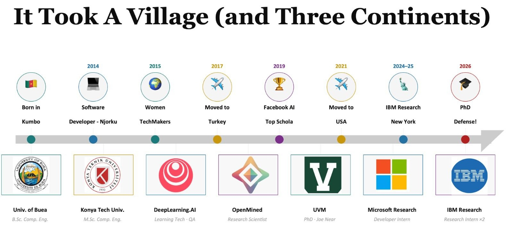

What Nobody Tells You About a PhD
May 2026
Written from one African's perspective (with a little help from Claude AI).
I did not write this to be inspirational. I wrote it because I was that girl sitting somewhere not knowing this path existed, and by the time I found out, I had already taken the long way around. If this saves one person some unnecessary anxiety at 2am, some money, or just two years of school they did not need, it has done its job.
Those of us who got through owe it to the ones still figuring it out to stop pretending it was easy or obvious. It was not. Consider this a reminder to myself too.
You can apply to a US PhD with just a bachelors degree.
I found this out after I already had a masters. Nobody in my circle knew this. I moved to Turkey for a masters degree and only discovered after arriving in the US that I could have applied directly. I am not complaining about the masters, it is genuinely where my whole career started, but somewhere right now there is a girl doing two extra years of school she does not need because nobody told her this option existed.
Start here: Chinasa Okolo's graduate application resources. She has compiled everything you would otherwise spend months piecing together alone. Also Deep Learning Indaba, an annual gathering of African machine learning researchers that offers scholarships and mentorship specifically for people trying to break into the field from our side of the world.
You also do not need a bachelors in the same field. Some of the most interesting researchers I met during my PhD started in English, Theater, Physiology, Physics. They brought perspectives the rest of us simply did not have. The door is wider than people tell you.
I did not know research was a career.
I knew what a PhD was. What I did not know was that reading papers, questioning them, building on them, and eventually writing your own was something a person could do for a living. I found this out in a classroom in Turkey when a professor handed us a research paper and told us to critique it. Something clicked. That moment changed everything and I almost missed it entirely because nobody had shown me it existed before then.
If you are still not entirely sure what research actually is, you are not behind. You are just earlier in the process than the people who had someone point the way for them.
A PhD does not have to end in a professorship. Actually, most do not.
You can become a research scientist at a lab like IBM Research or Google DeepMind. An engineer who builds things that reach real people. An AI policy advisor helping shape how governments think about technology. An entrepreneur. Someone working on problems that matter to the communities you come from. A product leader. A consultant. A teacher without a tenure track.
Figure out what kind of work you actually want and build toward that, not toward what you think a PhD is supposed to look like.
The information gap is not a talent gap.
The distance between someone who grew up in Kumbo and someone who grew up in Palo Alto is not mainly about ability. It is largely about who told them what was possible and when, what doors they were shown, and who held them open.
The version of me who started this had no map. She built one anyway, slowly, across three continents, with a lot of help from people who did not have to help her.
Now she is writing it down.

Your advisor is the most important decision of your PhD.
Nobody teaches you how to make it, which is wild when you think about how much depends on it. Your advisor shapes everything: the pace of your research, your confidence, your career opportunities, your mental health, the kinds of risks you are allowed to take. A bad outcome is not always about a bad advisor. Sometimes it is just two people who work completely differently stuck in a relationship that was not designed to end gracefully.
Before you commit: talk to current students, not just the ones the advisor sends you to. Ask what happens when experiments fail for months, because they will. Ask how often they actually meet with students. Ask if people finish on time. Think about whether you need frequent feedback or can work independently for weeks. Think about whether you want someone who pushes you to publish fast or someone who lets you sit with a problem until it is actually solved. These shape very different experiences.
Also: be careful with very famous advisors. Sometimes you will barely see them. Sometimes the mentorship is coming from a postdoc while the famous person shows up for the highlights. The name looks great on a CV. Know what else you are and are not signing up for.
I was lucky. I worked with Joe Near before formally committing and talked to his students first. Try to get as close to that as you can.
Take care of your body. Seriously.
Most PhD programs in the US come with health insurance. Use it, not just when something is wrong. Annual checkups, blood work, eyes, teeth (dental and vision are sometimes separate so check your plan), a therapist if you can access one. Do not wait until you are falling apart to start paying attention. That is too late and also expensive.
A medication I was prescribed once messed up my metabolism in ways I did not see coming. I spent months trying to fix it the popular ways: intermittent fasting, keto, intense workouts, things that genuinely work for a lot of people, and made everything worse before I figured out what was actually going on. The lesson is not to avoid doctors. It is to do your own research, listen to your body when something feels off, and remember that what works for most people can do the opposite for you.
Find something that gets you out of your head and do it consistently. I love Zumba, strength training, and pickleball. Yes, pickleball. I promise it is worth it. I also learned to swim during my PhD, which I recommend, with one caveat: if you have braids, water gets in, it stays in, and on a PhD stipend you are not redoing your hair every week. So I swim when I can and make peace with it. I attempted riding a bike exactly once in Vermont. We never speak of what happened that day.
The world decides what you are before you open your mouth. Open it anyway.
During my masters in Turkey, I would sometimes ask for directions and people assumed I was begging. I walked into shops and was watched before I touched anything. I was not just foreign and Black. I was from somewhere people had already decided meant desperate, and they responded to that version of me before I said a word.
I arrived in the US having read Americanah, Chimamanda Ngozi Adichie's novel about a Nigerian woman navigating what it means to be African in America, already knowing things would be different here. What I did not fully anticipate was the layers inside that. Being African and being Black American are not the same experience and people can often tell the difference the moment you speak. You will occupy a category that does not fit neatly into any of the existing boxes. That can feel isolating. It can also mean you get to define it yourself, which is its own kind of freedom if you let it be.
Your accent is a fingerprint, not a flaw.
I did not know my accent was unusual until people started telling me. Most people assume I am Nigerian. Some think I am Francophone, which is its own interesting puzzle because I grew up Anglophone in the Northwest Region of Cameroon, surrounded by a Francophone majority. Turns out that proximity gets into you whether you speak the language or not. I say certain words, biscuit for example, and people pause and ask where I am from.
Your accent is not something to fix. Grammar, clarity, fluency, those you work on always. But the accent itself is yours. It is a fingerprint. It carries every place you have been, every language that surrounded you, every version of yourself that got you here. Someone out there needs to see you succeed with your accent intact so they know they do not have to erase themselves to get somewhere.
Speak clearly. Say the thing. The people who dismiss you before you finish your sentence are giving you free information about whether their opinion matters.
Find your people. Then let them expand your world.
When you arrive somewhere new, find the people who understand without explanation what it means to build a life far from home. You need that more than you know.
And then step outside that circle. I noticed that people tend to stay within their own groups: Africans with Africans, Indians with Indians, and so on. It makes sense. It is comfortable. But it is also a missed opportunity when you have this much diversity around you. Some of the best ideas, opportunities, and lessons in how to actually navigate a new country came to me from people who were nothing like me. Your community is a base, not a boundary.
Go beyond what your institution hands you too. I was the only person in my lab working on privacy in machine learning. I had to find my research community elsewhere. OpenMined was that for me: engineers, researchers, people working on the same problems from completely different angles. Do not wait for your institution to build your world. Go find it yourself.
Reach out. Be patient. Be grateful.
I reached out to researchers I admired with no real reason to expect a response. Some ignored me. Some responded and became collaborators, recommenders, and some of my closest friends.
Do not let the fear of silence stop you from sending the email. When someone does not respond, leave it alone. They do not owe you their time and they are probably carrying something you cannot see. When someone does respond, meet it with real gratitude because they genuinely did not have to. Be the kind of person who makes people glad they responded.
Networking is not bragging. I am still learning this myself.
There is something in how many of us were raised, this sense that you do not push yourself forward, that you let your work speak, that you stay quiet and humble and the right people will notice. I understand where it comes from. I also know it has cost people opportunities they deserved.
Academia does not work that way and nobody warns us. You have to talk about your work, go to conferences and actually introduce yourself, email researchers whose papers you have read at midnight, post about what you are building. None of that is arrogance. It is just how this world operates. If you do not learn visibility, people with less interesting ideas will simply be more visible than you. That is a race you lose by default, and it does not have to be that way.
The visa will remind you of your place. Plan around it anyway.
I missed conferences because of my visa. Watched colleagues fly to venues where I had been accepted to present, build the hallway relationships that become collaborations and job offers. Not because my work was not ready. Because of where I was born.
The second time I traveled outside the US I got a scare coming back through the border that I still think about. Carry every immigration document you have, expired or not, whether you think it is relevant or not. Old visa, old I-20, university letter, all of it. You never know what someone at a border will ask for and having it costs you nothing.
Apply for your visa early. For everything. Look for travel grants specifically for international students. And when you cannot be in the room physically, find another way in. Email the speaker whose talk you missed. The door being harder for you to open does not mean it is closed.
Being the one who made it comes with weight.
If you are African and abroad, you probably already know what I mean. But let me say it anyway.
The Anglophone crisis has displaced hundreds of thousands of people in Cameroon. Children who should be in school are not. People you grew up with are living through things you read about on your phone and feel completely helpless about. The guilt of being safe has a specific texture that is hard to explain to someone who has not felt it.
And then there is everything else. Sending money home on a PhD stipend because of course you do and you are happy to, but the math is always running. Strangers on social media assuming that abroad means unlimited resources and asking for money accordingly. People who never reached out when you were still in Cameroon, suddenly upset that you do not reach out now. You cannot comment on what is happening at home because you are not there and people will remind you of that.
You are between two worlds and not fully present in either. I do not have a solution for this. I just want you to know it is real and it is not a character flaw.
Grief does not care about time zones.
I attended my brother's funeral on WhatsApp.
That sentence still does not feel real when I type it. Being far from family during loss is its own category of pain. The visa, the cost of the flight, the risk of not getting back, all of it conspires to keep you exactly where you are while everything important is happening somewhere else.
What helped: my amazing husband was there. My friends showed up. My colleagues reached out. My friends from home surrounded my parents and made them feel our presence across the distance. Grief from far away is not smaller. It is just carried differently. You do not have to carry it alone.
Resources
- Chinasa Okolo's CS PhD application resources
- Fellowships for CS grad students
- Deep Learning Indaba
- Black in AI
- Masakhane
- OpenMined